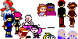

"CALL ON ME"
zoom
list
Those poor little guys...
I can't believe I destroyed a whole network... How many computers?
About 300. Don't worry, I doubt there were any sprites in there.
\
|
/
zoom
list
Man, I hope not...
It was a human workplace, so there'd likely be only games of solitaire on their systems. Nothing sentient.
\
/

zoom
list
"Wait, how do you know that?"
"Uh, well... Snooping on IM signals is a recent hobby of mine. Seems it was something called a 'call center.' Do you have any idea what 'telemarketing' is?"
zoom
list
Suddenly I feel a lot better.
I don't get it.
Odds are good that you don't want to.
\
\
|
zoom
Kid Radd ©2004 by Dan Miller
list